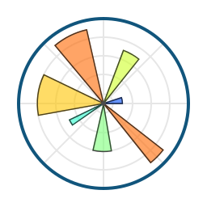
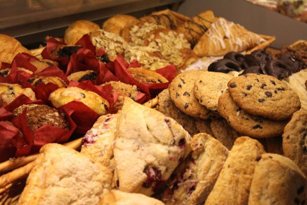
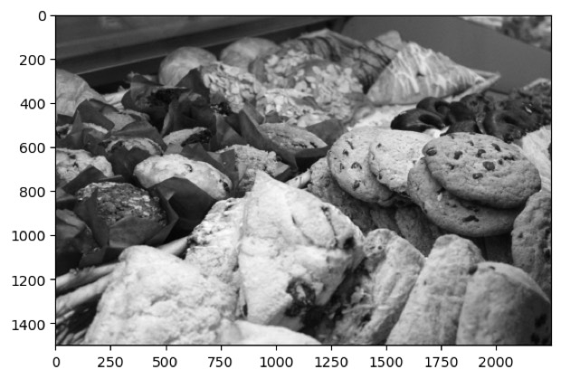
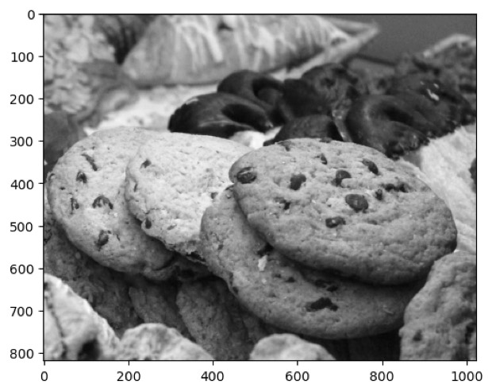
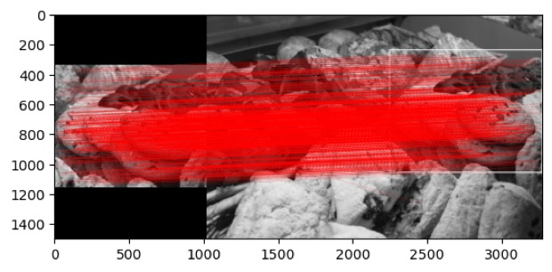

Hey,
I am Sairaj!
I am a software engineer and a computer science graduate from Cal Poly! Mostly I write Go, build AI agents, and spend my curiosity on large scale distributed systems.
Outside the terminal, I read a lot, play tennis most weekends and watch Liverpool with more hope than the evidence supports.
Always on the lookout for somewhere new to eat!
Soffa Electric
NL2SQL
Conversational AI agent.
A search agent that turns a natural language question into a query that is safe to run. Most of the difficulty sits in the schema, and in working out which questions to refuse outright.
Task Management
Adding project and task workflows, with status tracking gated by role-based permissions for every project.
Implement adaptive PID control loop
Reconfigure safety zone muting logic
Execute deterministic task interrupts
Parse custom Ethernet/IP telemetry frames
Process high-speed encoder quadrature
Calculate rolling FFT spectrum analysis
Handle double-precision floating math
Cal Poly Pomona
Content-Based Image Retrieval
SIFT has the best matching rate of the classical retrieval algorithms and the worst runtime, and every stage feeds the next, so there is little to parallelise. Three things helped: non-maximum suppression to drop redundant keypoints, four threads taking a quadrant of the image each, and partial processing that abandons an image once a quadrant has failed to match.





Sift
A CLI that makes AI-generated code reviewable. Line-by-line review stops scaling past a few hundred lines a day, so sift ranks changes by risk, folds the noise, and surfaces what needs a human.
distributed-systems
Distributed systems implemented from first principles.
Written to find out what is underneath the abstractions, and which invariant breaks first when the network stops cooperating.